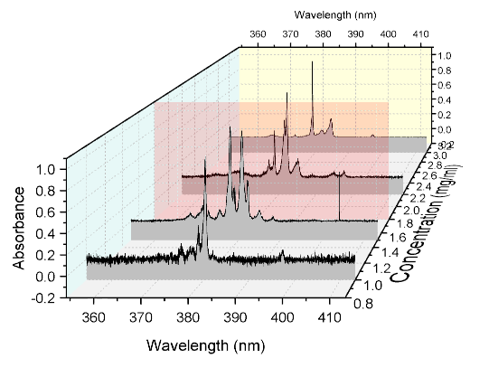
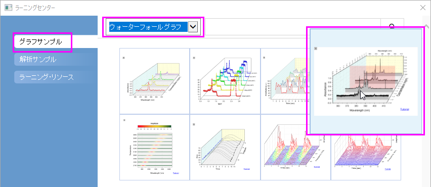
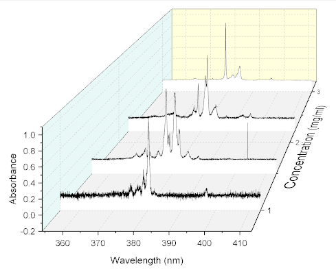
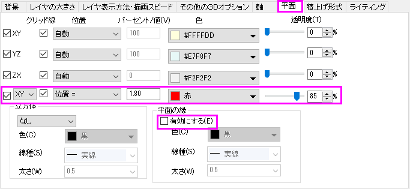
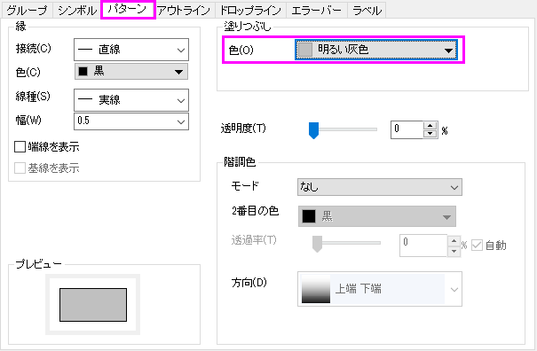
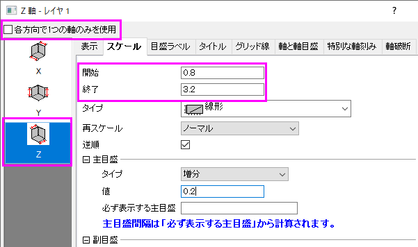
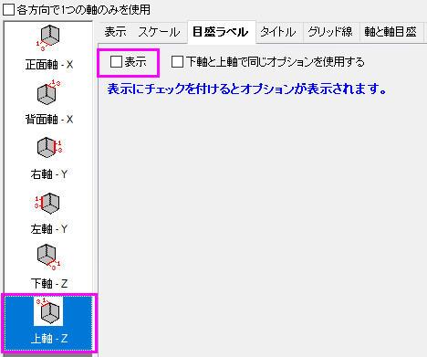
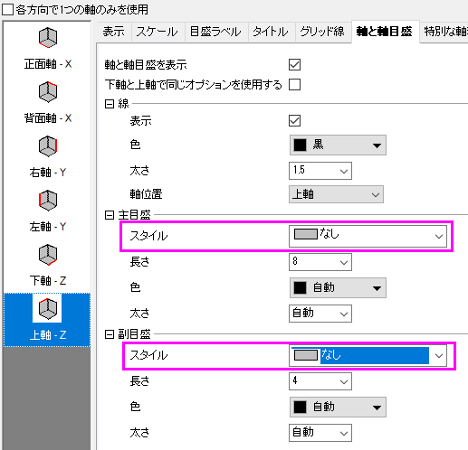
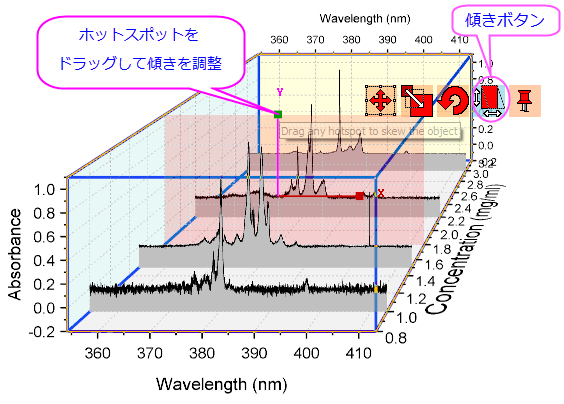

3Dウォータフォール
3D-Waterfall
サマリー
Originは、OpenGLベースの3Dウォーターフォールグラフをサポートしています。3D ウォータフォールは、壁の幅が0の特殊なタイプの3Dウォールグラフです。ほかの3Dグラフと同様、回転やリサイズ、伸縮、傾斜といった操作が可能です。

学習する項目
このチュートリアルでは、以下の項目について解説します。
- 3Dウォーターフォールグラフを作成する
- グラフ内の特定の場所に面を追加する
- 3Dウォーターフォールグラフを傾ける
ステップ
- メニューからヘルプ：ラーニングセンターを選択して、ラーニングセンターダイアログを開きます。ダイアログの左パネルからグラフサンプル
を選択し、サンプルのドロップダウンリストからウォーターフォールグラフ を選択します。下のサムネイルをダブルクリックして、サンプルのWaterfall
Plots - 3D Waterfallを開きます。

- Book4Iをアクティブにし、全ての列を選択してメニューから作図：3Dグラフ：3Dウォーターフォールを選択して作図します。

- メニューからフォーマット：作図の詳細（レイヤ属性）を選択し、作図の詳細ダイアログボックスを開きます。
平面タブを開き、4番めのチェックボックス（XY）にチェックを付け、平面の縁の項目にある、有効にするのチェックボックスを外して、以下の図のように設定を行います。

- 左パネルのLayer1アイコンの左にある矢印をクリックして、レイヤ内の全てのプロットを表示します。最初のプロットリストを選択して、右パネルではパターンタブを開きます。塗りつぶしの色を明るい灰色
に設定します。

- OKをクリックしてダイアログを閉じます。軸をダブルクリックして、軸ダイアログボックスを開きます。各方向で1つの軸のみを使用のチェックを外します。スケールタブを開いてから左側パネルでZ
軸アイコンを選択します。開始の値を0.8、終了の値を3.2に設定し、主目盛の増分の値を0.2に設定します。

目盛ラベルタブを開きます。左側で上軸-Zが選択されていることを確認してから表示のチェックを外して上にあるZ軸の目盛ラベルを非表示にします。

- 軸と軸目盛タブを開き、上軸-Zが選択されていることを確認します。そして、主目盛と副目盛をなしに設定します。

- OKをクリックして、ダイアログを閉じます。グラフをクリックして5つの赤いボタンをアクティブにします。左から4番目の傾斜ボタンをクリックし、X/Yホットスポットを使用してグラフを傾けます。グラフは以下のようになります。
